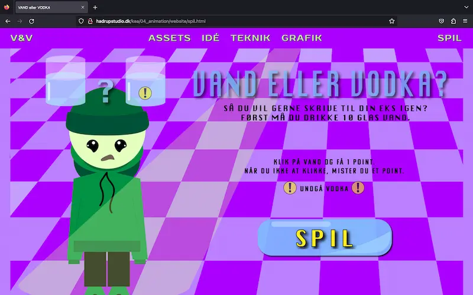

Grundlæggende Animatiøn
Tema 4
04.04.01 - temaopgave
Tema 4 handlede om at skabe et spil ved hjælp af programmeringssproget JavaScript sammen med css animationer. Min designprocess startede med idégenerering og skitsering, hvilket førte til papirprototype og stilvalg. Alt dette udmundede sig i ‘Vand eller vodka’ spillet, hvor man tester sin promille i håb om at kunne skrive til sin eks.
 gø tøAktivitetsdiagram
Spillet virkemåde indkapslede jeg i et aktivitetsdiagram ved hjælp af VS Code udvidelsen ‘draw.io’, som gav mig et konkret overblik over, hvordan spillet skulle forløbe sig.
Designprocess
Designprocessen fortsatte i Adobe Illustrator, hvoraf jeg udviklede mine færdigheder, og blev mere komfortabel med programmet. Jeg designede baggrunde og UI-elementer, som herefter var klar til at blive eksporteret som svg-filer og implementeret i selve spillet.
gø tøStatemachine Diagram
For at blive klar til at kode i JavaScript og skabe spillets flow lavede jeg et State Machine Diagram, som jeg benyttede mig af og ændrede løbende i under hele programmeringsdelen.
JavaScript
Tema 4 har gjort mig mere fortrolig i at arbejde med JavaScript og de egenskaber det har, som blandt andet indebærer addEventListener, function, console.log, querySelector, const, let og Math.random.
Site
Slutteligt lavede jeg en hjemmeside som præsentation for spillet samt designproces, assetliste, teknik og grafik. (link). Grundet tidspres var der ikke plads til en fyldestgørende designproces til dette site, hvilket resulterede i et haltende site. Denne del lærte mig blot om, hvor stor en rolle wireframes og layoutdiagrammer har for et vellykket resultat.